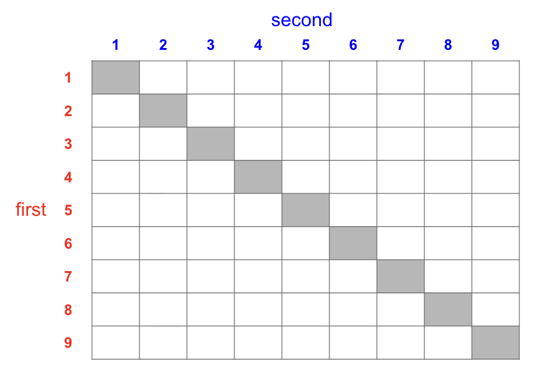

03:00
Computing Probabilities
STAT 20: Introduction to Probability and Statistics
Adapted by Gaston Sanchez
Review
Conditional Probability
For two events \(A\) and \(B\) we denote the:
conditional probability of \(A\) given \(B\) as: \(\quad P(A \vert B)\)
conditional probability of \(B\) given \(A\) as: \(\quad P(B \vert A)\)
If \(A\) and \(B\) are independent, then:
\(\quad P(A \vert B) = P(A)\)
\(\quad P(B \vert A) = P(B)\)
Multiplication rule
For two events \(A\) and \(B\) \(\quad \Rightarrow \quad\) \(P(A \text{ and } B) = P(A \vert B) P(B)\)
Complement Rule
\(P(A^C) = 1 - P(A)\)
Concept Question 1
Concept Question 1a
Flip 3 coins, one at a time. Define the following events:
\(A\) is the event that the first coin flipped shows a head
\(B\) is the event that the first two coins flipped both show heads
\(C\) is the event that the last two coins flipped both show tails
What is the outcome space \(\Omega\)?
What is the outcome space \(\Omega\)?
\(A\) is the event that the first coin flipped shows a head
Find \(P(A)\)
\(\Omega\)
H H H
H H T
H T H
H T T
T H H
T H T
T T H
T T T\(B\) is the event that the first two coins flipped both show heads
Find \(P(B)\)
\(\Omega\)
H H H
H H T
H T H
H T T
T H H
T H T
T T H
T T T\(C\) is the event that the last two coins flipped both show tails
Find \(P(C)\)
\(\Omega\)
H H H
H H T
H T H
H T T
T H H
T H T
T T H
T T TConcept Question 1b
Flip 3 coins, one at a time. Define the following events:
\(A\) is the event that the first coin flipped shows a head
\(B\) is the event that the first two coins flipped both show heads
\(C\) is the event that the last two coins flipped both show tails
Events \(A\) and \(B\) are:
- Independent
- Mutually exclusive
- None of the above
Concept Question 1c
Flip 3 coins, one at a time. Define the following events:
\(A\) is the event that the first coin flipped shows a head
\(B\) is the event that the first two coins flipped both show heads
\(C\) is the event that the last two coins flipped both show tails
Events \(A\) and \(C\) are:
- Independent
- Mutually exclusive
- None of the above
Concept Question 2
Concept Question 2
Suppose we draw 2 tickets at random without replacement from a box with tickets marked {1, 2, 3, . . . , 9}.
Let \(A\) be the event that at least one of the tickets drawn is labeled with an even number.
Let \(B\) be the event that at least one of the tickets drawn is labeled with a prime number (recall that the number 1 is not regarded as a prime number).
Suppose we draw 2 tickets at random without replacement from a box with tickets marked {1, 2, 3, . . . , 9}.
What is the outcome space \(\Omega\)?
Let \(A_1\) be the event that the 1st ticket is an even #
Find \(P(A_1)\)

Let \(A_2\) be the event that the 2nd ticket is an even #
Find \(P(A_2)\)
Let \(A\) be the event that at least one of the tickets is an even #
Find \(P(A)\)
Let \(A\) be the event that at least one of the tickets is an even #
Find \(P(A) = 1 - P(A^c)\)
Let \(B\) be the event that at least one of the tickets drawn is labeled with a prime number (recall that the number 1 is not regarded as a prime number).
Find \(P(B)\)
Prime numbers: 2, 3, 5, 7
Non-prime #'s: 1, 4, 6, 8, 9Let \(B\) be the event that at least one of the tickets drawn is labeled with a prime number (recall that the number 1 is not regarded as a prime number).
Find \(P(B) = 1 - P(B^c)\)
Prime numbers: 2, 3, 5, 7
Non-prime #'s: 1, 4, 6, 8, 9Concept Question 2b
Suppose we draw 2 tickets at random without replacement from a box with tickets marked {1, 2, 3, . . . , 9}.
Let A be the event that at least one of the tickets drawn is labeled with an even number.
Let B be the event that at least one of the tickets drawn is labeled with a prime number (recall that the number 1 is not regarded as a prime number).
Suppose the numbers on the tickets drawn are 3 and 9.
Which of the following events occur?
\(A\)
\(B\)
\(A\) and \(B\) (\(A \cap B\))
\(A\) and \(B^C\)
\(A^C\) and \(B\)
Concept Question 3
Concept Question 3a
02:00
The 2024 World Series was the championship series was a best-of-seven playoff between the Los Angeles Dodgers and the New York Yankees. The winners in the World Series have to win a majority of 7 games, so the first team to win 4 games wins the series.
Suppose we assumed that the probability that the Dodgers would have beaten the Yankees in any single game was estimated at 56%, independently of all the other games.
What was the probability that the Dodgers would have won in a clean sweep?
Concept Question 3b
02:00
Suppose we assume, instead, that the probability that the Dodgers would have beaten the Yankees in any single game was 50%, independently of all the other games.
In this case, was the probability that the series would have gone to 6 games higher than the probability that the series would have gone to 7 games, given that 5 games were played?
tinyurl.com/yujrzpm9
Practice Problems
20:00
Worksheet
40:00